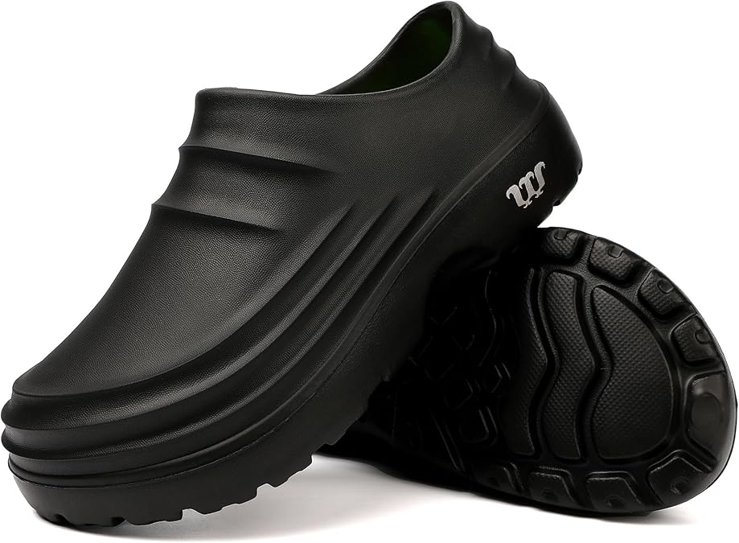
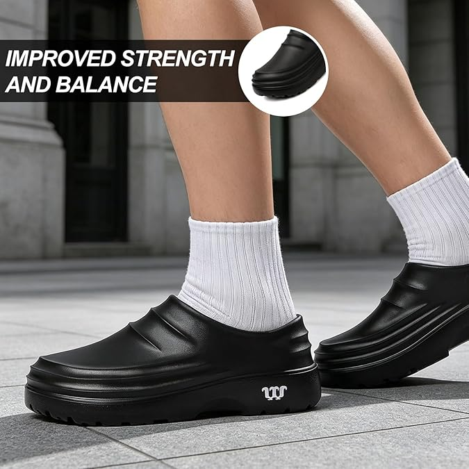

Confident footing
A slip-resistant outsole supports traction in wet work environments.
Slip-resistant, water-resistant work clogs designed for chefs, restaurant crews, and professionals who stay on their feet.

Every detail supports practical daily wear in kitchens, restaurants, food production, hospitality, and other jobs spent standing and walking.
A slip-resistant outsole supports traction in wet work environments.
The water-resistant upper is made for straightforward end-of-shift care.
A wide toe box and lightweight slip-on shape prioritize practical comfort.
A soft insole and thick supportive sole suit long periods on your feet.

Reinforced at the toe. Cushioned underfoot. Easy to slip on before prep and clean after close.
Explore the shoe →